아무 곳이나 클릭하세요!
Base
어도비 인디자인 실행
가장 먼저 어도비 인디자인을 실행하자. 일러스트레이터 등을 사용할 수도 있다. 하지만 오늘의 가이드북은 인쇄물 편집이 편리한 인디자인을 기준으로!
대지 사이즈 선택
소책자를 만들 때 가장 보편적인 크기는 최종 사이즈가 A5가 되는 것이다. 그러려면 펼쳐졌을 때 A4가 되어야 하므로 대지를 A4로 설정해주자. 하나 더 중요한 것은 페이지 수가 4의 배수가 되어야 한다. 왜냐하면 한 용지에 양면으로 4페이지가 들어가기 때문에! 그 후 마주 보기 설정에 체크하면 된다.
여백과 단, 가이드라인 설정
소책자를 만드는 대부분의 목적은 효과적이고 간결한 정보 전달이다. 그러려면 텅 빈 화면에 아무렇게나 정보들을 배치해서는 안 된다. 보는 사람이 한 눈에 알아볼 수 있도록 충분한 여백을 주고, 가로와 세로의 위치들이 잘 맞아야 한다. 그리고 후에 인쇄할 때 오차 범위를 상쇄하기 위해 도련도 필요하다. 모두 인쇄 편집에 최적화된 인디자인에서 쉽게 만들 수 있으니 기본을 꼭 지키고 들어가자!
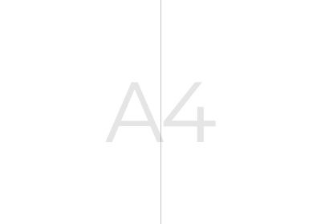
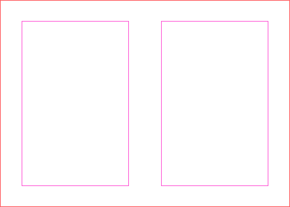
Design
편집에 활용할 그리드 생성
소책자 제작의 가장 보편적인 목표 중 하나는 간결하고 흥미로운 정보의 전달이다. 그러려면 글과 이미지가 체계를 가지고 읽는 사람의 눈에 한 번에 들어올 수 있도록 철저히 설계되어 배치되어야 하는데, 그 작업을 위해서는 그리드가 필수적이니 꼭 만들어 주도록 하자.
자유로운 디자인!
이제 디자인을 할 모든 준비가 되었다. 내가 설명하고자 하는 내용을 적절히 배치하고 위계를 설정해 페이지 안에 배치해보자.
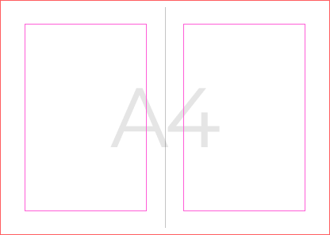
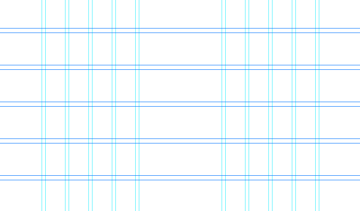
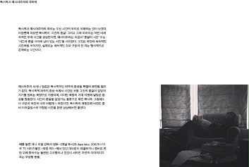
Making
내보내기
인쇄소 방문을 기준으로 실물 인쇄를 할 때 가장 편한 파일 작업 방식은 인디자인의 '소책자 인쇄' 기능을 활용하는 것이다. 원래 페이지 배열 순서를 실물에서 재현하려면 전부 재배열해야 하는데, 그 작업을 자동으로 수행해주는 아주 좋은 기능이다. 추가적으로 재단선까지 만들어 pdf 파일로 내보내 주자.
종이 선택
종이는 인쇄소에 방문해 고르거나, 종이를 전문적으로 다루는 업체에 방문해 직접 만져보며 구매해 따로 가져갈 수도 있다. 가볍게 한 번에 읽을 수 있는 것이 소책자의 장점이면서도 너무 얇은 종이는 인쇄 자체가 불가능할 수 있으니, 최소 90g 이상의 내지에서 200g 언저리의 표지까지 사이에서 종이 무게를 적절히 선택해 보자.
제본 방식 선택
중철 제본은 기본적으로 두 개의 스테이플러로 찍어내는 방식인데, 스티치 제본을 선택하면 스테이플러 대신 실로 종이를 꿰메 제본할 수 있다. 친근하고 따뜻한 감성이 특징인데, 종이 종류가 3가지를 넘어가거나 너무 얇거나, 잘 터지는 종류의 종이를 사용하는 등등의 경우에는 스티치 제본을 할 수 없다. 나의 소책자 내용에 어울리는 제본 방식을 선택하면 된다.
인쇄와 검수
소책자 파일과 종이, 제본 방식이 모두 준비되었다면 인쇄소에서 중철제본으로 인쇄하자. 직접 인쇄소를 방문하는 것의 장점은 그 자리에서 테스트해보고 검수할 수 있다는 것이다. 사장님과의 원활한 커뮤니케이션으로 머릿속에서 상상한 나의 소책자를 실물로 옮길 수 있도록 하자.
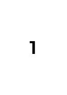
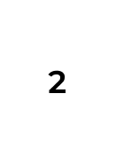
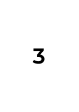
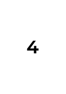
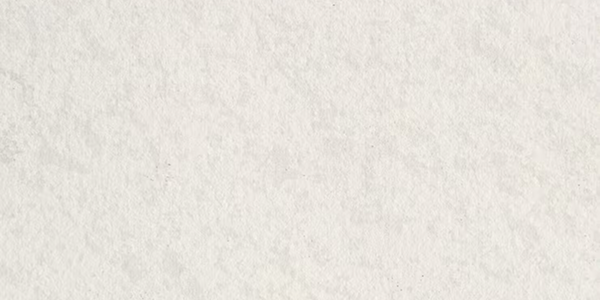
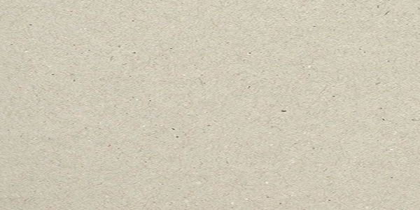
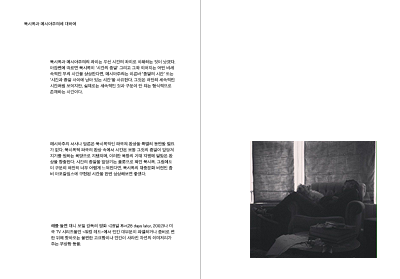
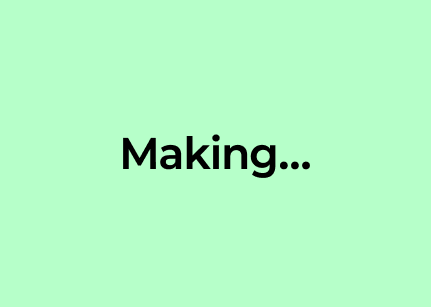
소책자 예시 확인하러가기 >>>
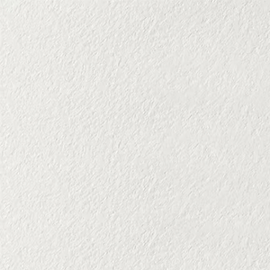
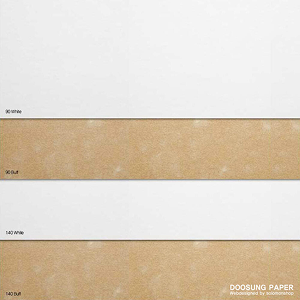
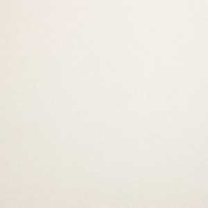
표지 | 스코트랜드 130 스노우
130그램으로 약간의 두께감이 있고 가벼운 미색과 적당한 질감이 있다. 친근한 느낌을 내기에 좋은 종이 중 하나이다.
색지 | 쉽스킨 90g
양피지의 질감을 구현한 반투명 트레이싱지 종류 중 하나이다. 색지가 너무 강렬하다면 이러한 트레이싱지 종류를 사용해 부드럽고 신비한 분위기를 연출할 수 있다.
내지 | 센토 Extrawhite 100g
표지로 사용한 종이와 비슷한 색감의 미색이 들어간 내지이다. 질감과 두께의 구현이 내지로 사용하기에 아주 적합하다.
드래그해서 돌려보고, 페이지를 클릭하면 다음 장으로 넘어갑니다.